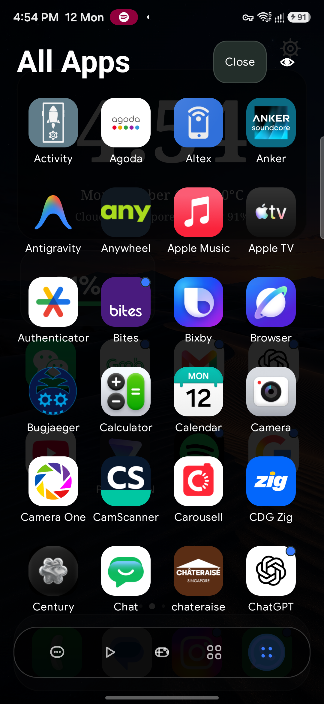
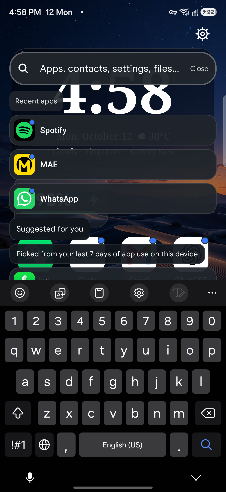
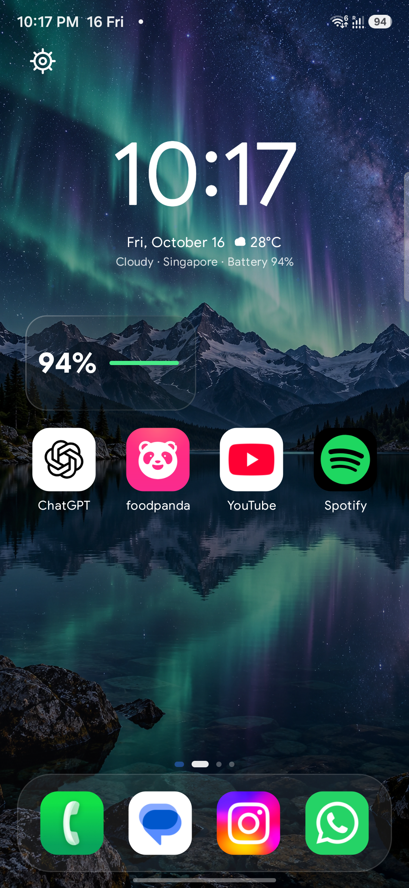

Home & widgets
Choose from 48 clock faces and 48 battery designs, filter styles by look, then tune clock typeface and seconds, color, scale, alignment, detail, battery labels, charging icon, accents, and per-widget surface opacity.



96 widget styles. Zero-lag caching.
Glassmorphic folders, customizable icons, local search, and optional web suggestions, tuned for high-refresh AMOLED displays.
Choose from 48 clock faces and 48 battery designs, filter styles by look, then tune clock typeface and seconds, color, scale, alignment, detail, battery labels, charging icon, accents, and per-widget surface opacity.
Floating A–Z letter preview scrubber, smart category badges, and instant long-press anchor menus right where you tap.
Find apps, settings, and files in one swipe with frosted-glass search. Call or message a contact through Android’s contact picker, with no contacts permission needed. Local results stay on-device; web suggestions are on by default, can be turned off, and send your query to Google.
Import your home screen from Nova Launcher, with a safety backup and undo.
The KabirAI assistant is gone, with fewer permissions.
Call or message a contact using Android’s contact picker. No contacts permission needed.
Stability and memory fixes for widgets, backups, and downloads.
Yes, it is free on Google Play.
No ads and no telemetry trackers. Local search stays on your phone.
Yes, with a safety backup and undo.
Yes, web suggestions are on by default and send your query to Google. You can turn them off in Settings.
Android 7.0 or newer.
KabirUI is made by Kabir Invents, without advertisements or telemetry trackers. Your support helps fund development.
Optional contributions support ongoing development. Ko-fi handles any donation on its own site; this website never processes payments.
Open Kabir Invents on Ko-fi Opens Ko-fi in a new tab.